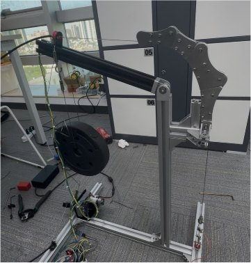
01Conceptual design
A bench rig on an aluminium frame: motor, spool, weight and chain, used to confirm that tensioning a cable through a segmented chain produces knee-extension torque.
Design Process — failure-driven iteration, from a bench rig to a wearable, repeatable system
The first stage answered one question before any refinement: can a hip-mounted motor, a cable and a chain behind the knee deliver useful assistance? Each build exposed the failure the next one had to fix — cable routing first, then force transmission — until the load path held on a life-size mannequin.

A bench rig on an aluminium frame: motor, spool, weight and chain, used to confirm that tensioning a cable through a segmented chain produces knee-extension torque.
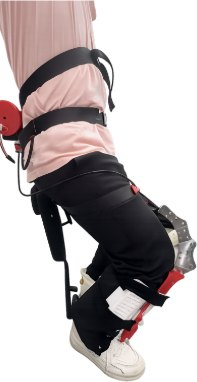
The first wearable build. The tendon path shifted from trial to trial, so the same motor command produced different assistance at the joint.
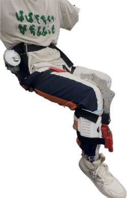
Routing was fixed, but the anchors were not: cuffs migrated under load and the force never reached the knee cleanly or repeatably.
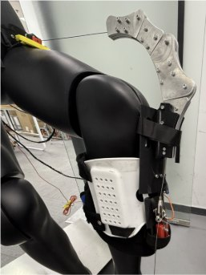
Semi-rigid five-link chain on rigid thigh and shin anchors. A stable load path on the mannequin — the baseline every Stage 2 iteration was measured against.
With the concept proven, iteration turned to the two subsystems that decide whether assistance is accurate: the electronics that sense and command the joint, and the spool that turns motor rotation into cable tension. Both were refined by failure.
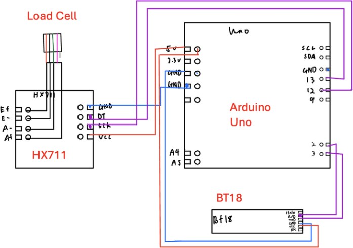
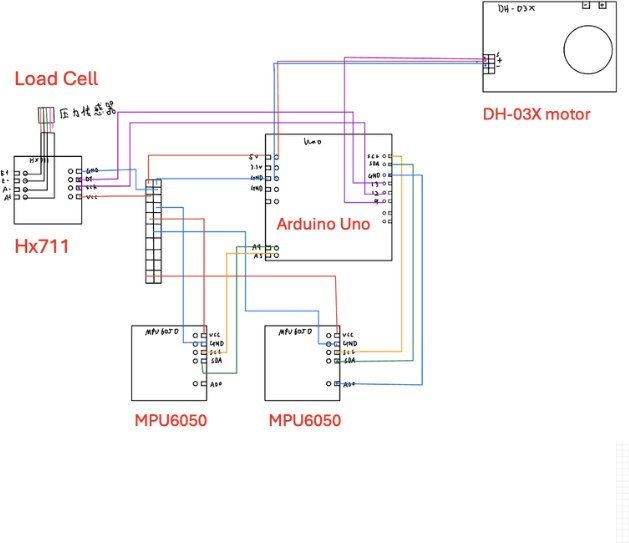
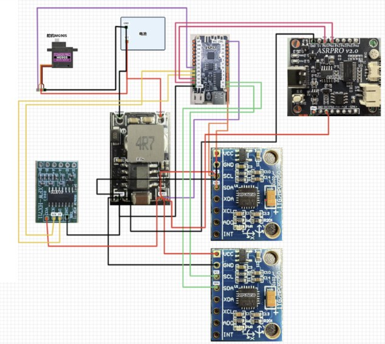
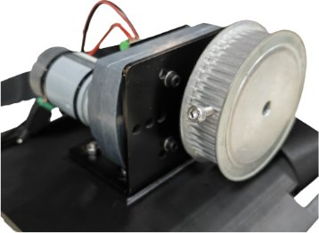
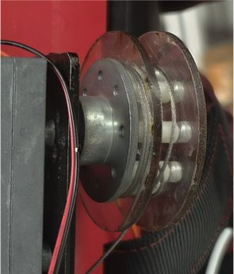
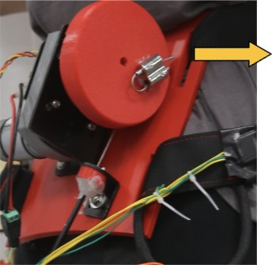
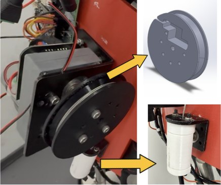
The last round of iteration fixed what the wearable itself did to the force: a frame that broke, then one that was too heavy; a cable path that bled torque into friction; and a load cell that read every spike. Each fix was driven by a measured failure.
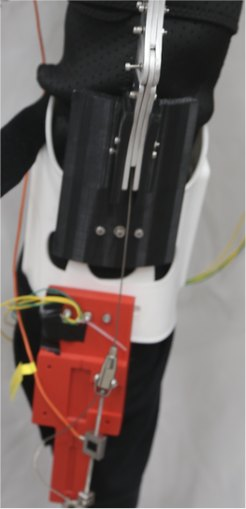
Inadequate structural connection and cable instability, causing component breakage during operation.
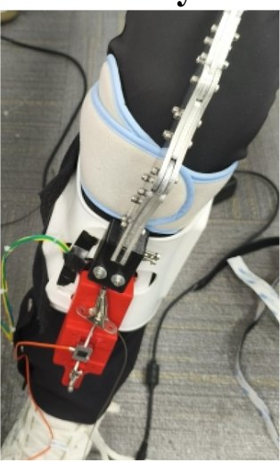
Addressed the strength limitations but introduced excessive mass and geometric inefficiency.
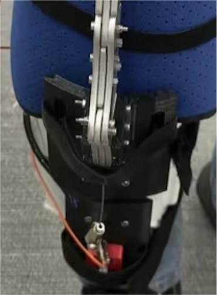
Incorporates optimized structural geometry and guided cable routing to ensure stable force transmission while maintaining compactness and wearability.
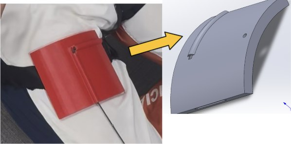
Cable routed between the legs and required a sharp ~90° directional change near the actuator — high friction from bending and surface contact.
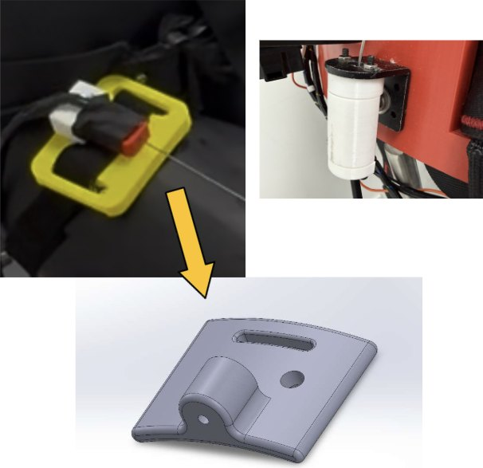
Cable rerouted along the waist through a compliant rubber interface, with a cable director beside the actuator to keep alignment and prevent misrouting — reduced friction and more efficient, stable force transmission.
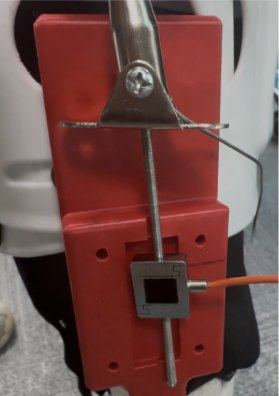
The load cell was rigidly coupled to the cable, so it directly experienced transient force spikes during actuation — high signal noise and poor repeatability.
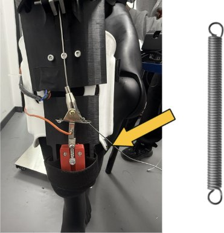
A compliant spring element in series with the load cell absorbs transient spikes and smooths the applied load — mechanical filtering that reduces high-frequency noise.
Four things Regenix does differently from the exoskeletons it was measured against: how it aligns with the joint, where it puts the load, what it does with the data, and how it trains the patient.
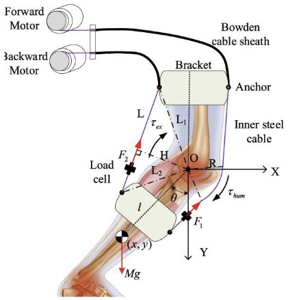
A rigid hinge fixes one axis; the knee's own axis migrates through flexion, so every degree adds misalignment and cuff shear.
Fig. 4 — Liu et al., 2022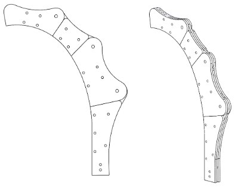
Adaptive chain eliminates axis mismatch while maintaining a deterministic tendon moment arm.
Fig. 5 — Semi-rigid chain structure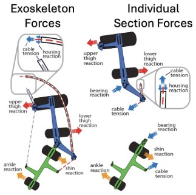
Peak tension reacts straight through the knee hinge and its cuffs — the joint surface carries the load.
Fig. — Witte et al., 2017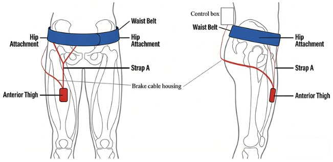
Multi-strap routing distributes peak tension across waist belt, hip and anterior thigh — zero contact on the knee surface.
Fig. 6 — Placement of exoskeleton anchorsExoskeletons are only able to provide assistive torque and record measurements.
K-Means clustering + statistical analysis + an LLM API, running on low-cost microcontrollers, interpret the results on-device.
Provides active torque assistance to guide the knee through its range of motion, supporting early-stage rehabilitation when patients cannot generate sufficient force independently.
Initial position → position after active assistanceDelivers assistance only after a user-generated force threshold is detected, ensuring safe, effort-initiated movement while preventing under- or overexertion.
Active leg extension → force-change detection → active assistanceApplies adaptive resistance proportional to user input and joint motion, promoting muscle strengthening and neuromuscular control during mid-to-late rehabilitation.
Active hamstring curl → force-change detection → resistance (cable rotates backwards)The final assembly and the electronics inside it: a hip-mounted actuator pack, a Dyneema extension-assist cable, the five-link semi-rigid knee chain and a shin anchor, controlled by an ESP32 with IMU and load-cell sensing.
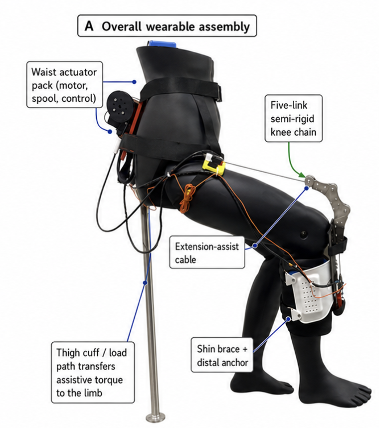
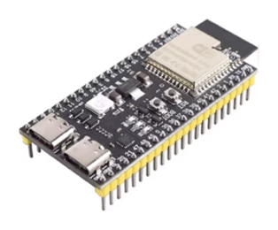
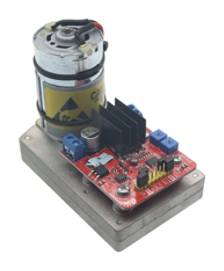
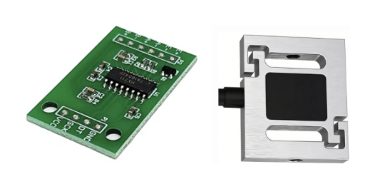
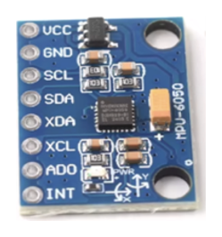
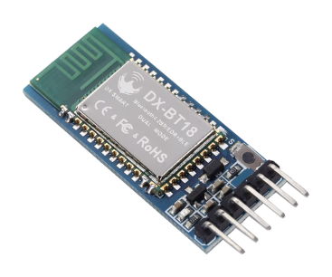